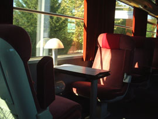
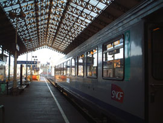
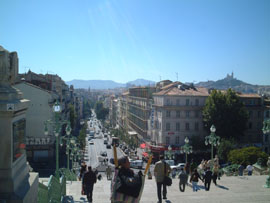
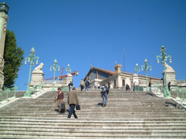
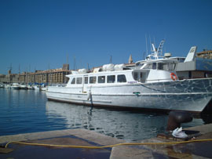
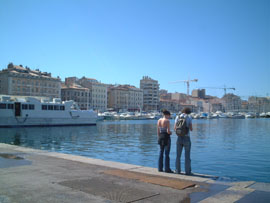
アンシーとゆー湖畔に小旅行するはずが、なぜかマルセイユに。
ただたんに予定していた電車に乗れなかったからなのだけど…しかしリヨン駅は2つあって、それが後に悲劇をよぶことになるわけなのだけど…
まーなにはともあれモンテクリスト伯で有名はイフ島へ。まずは腹ごしらえと名物ブイヤベースと定番ワインカシス。
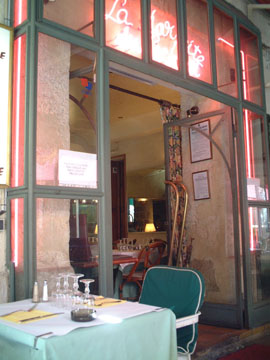
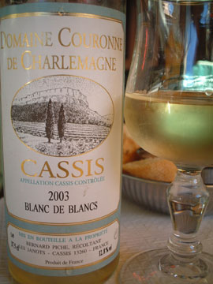
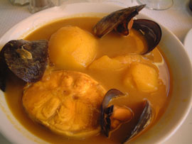
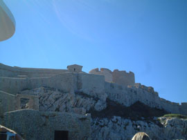
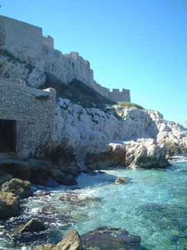
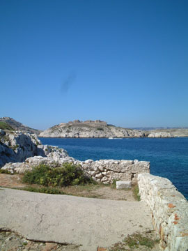
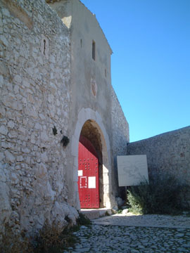
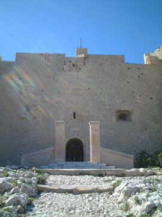
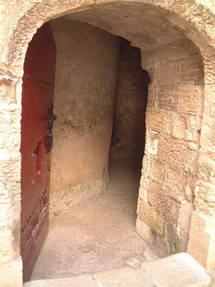
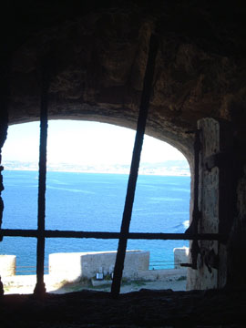
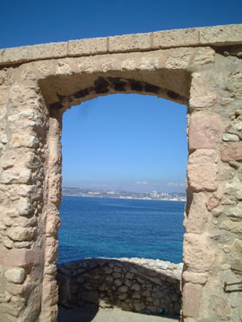
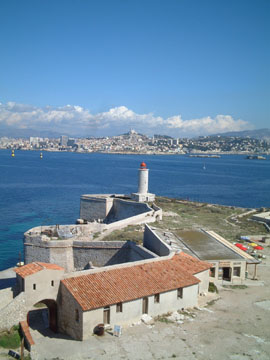
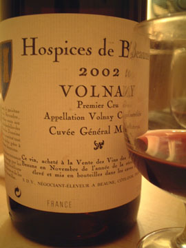
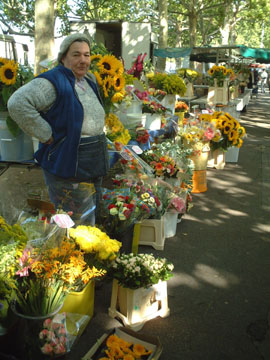

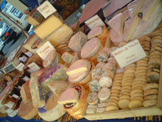
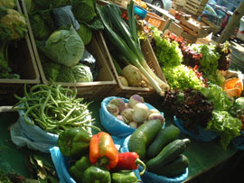
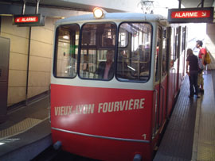
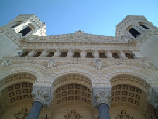
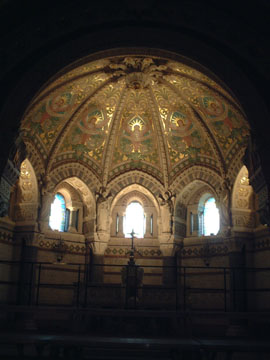
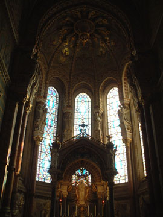
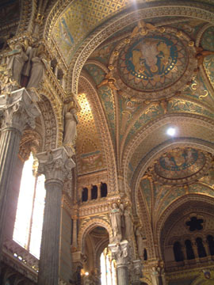
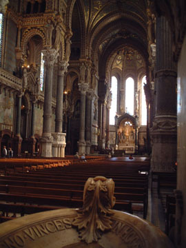
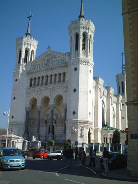
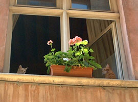
帰り道、日本人が店主のワインショップ発見。色々とワイン談義をさせてもらってローヌのワインを1本購入。帰国して焼肉とあわせて飲んだら、んまかったですわ。
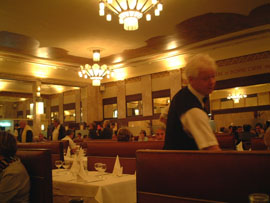
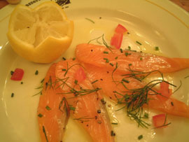
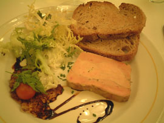
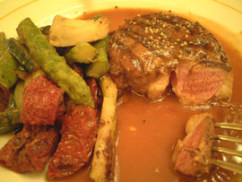
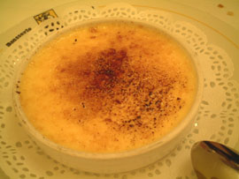
で、翌日は帰国とゆーことで、荷物まとめてチェックアウトして駅に行ったら目の前を電車が走っていく…
そうですまたやらかしました。リヨン違うほうの駅出発の時刻表を見てました。。。
タクシーに飛び乗り、あわてて次の停車駅に向かったものの間に合わず、結局違う列車でアムステルダムまで向かうことに…なにはともあれ無事に帰れたけど、結構ハードでしたわ。。。